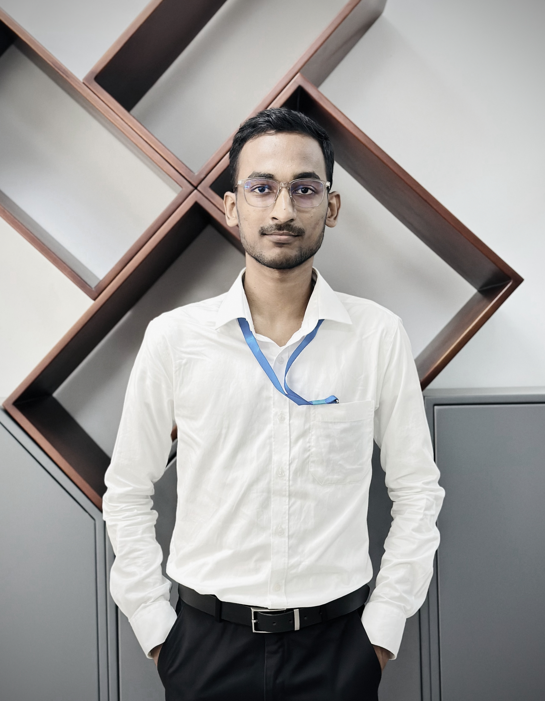
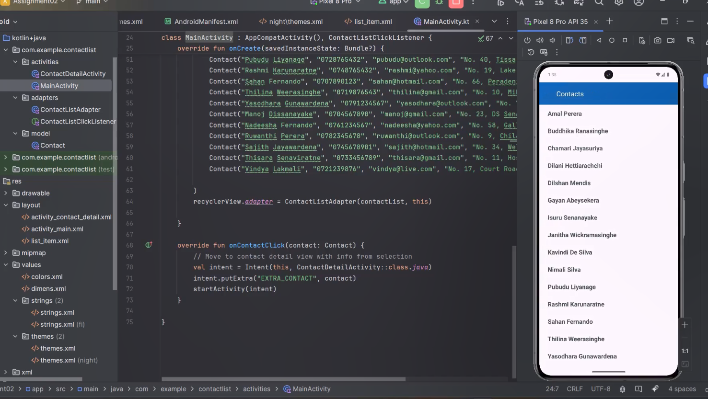
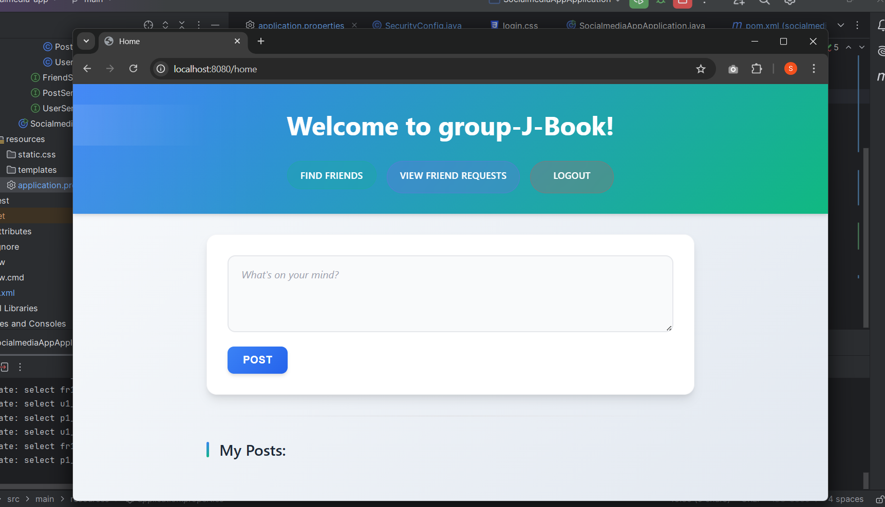
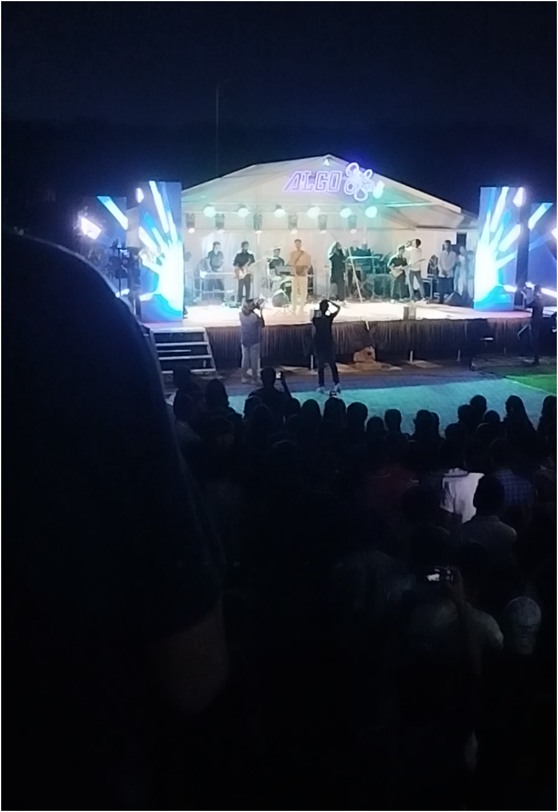
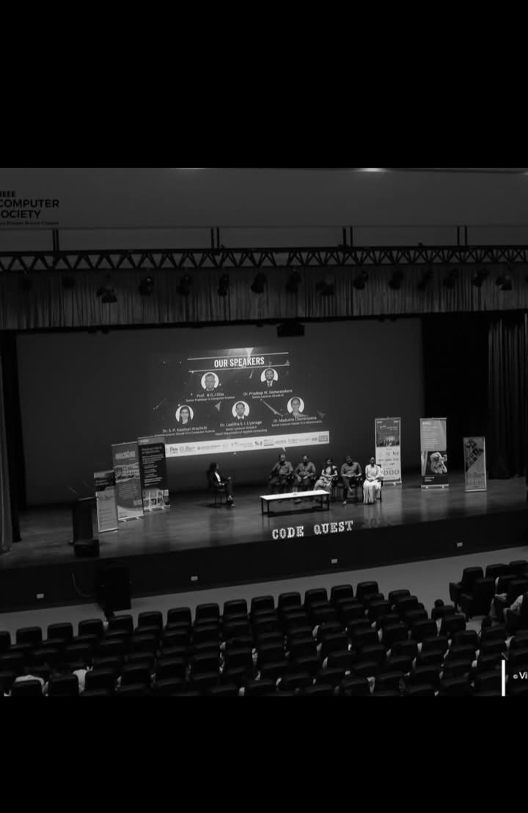
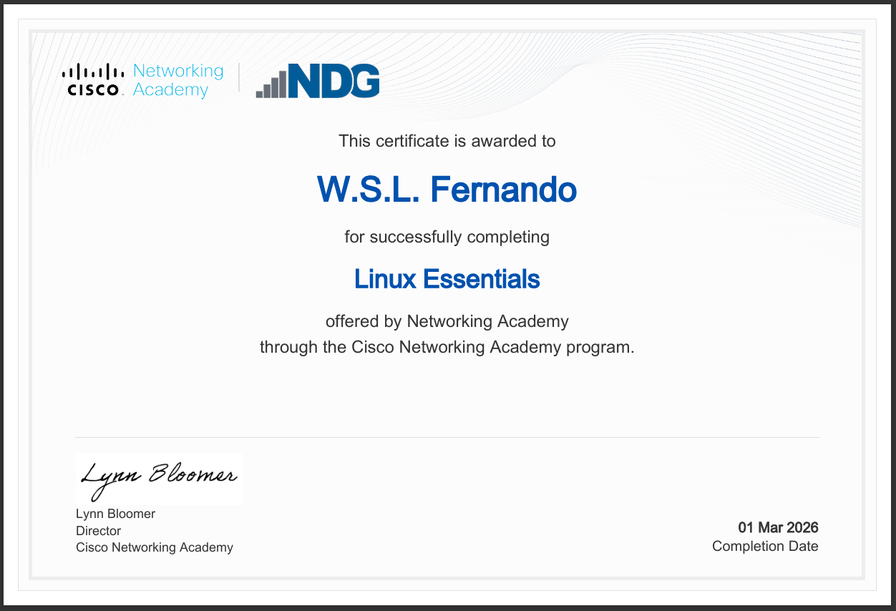

SURITH
FERNANDO
Aspiring Computer Science Undergraduate | Lifelong Learner | Tech Enthusiast
STUDENT NUMBER
CS/2021/029
DEGREE PROGRAM
Computer Science
FACULTY
Faculty of Computing and Technology
UNIVERSITY
University of Kelaniya ,
Sri Lanka

Short Bio
I'm Surith Fernando, an undergraduate in his third year who is pursuing the Bachelor of Science Honours in Computer Science degree at the University of Kelaniya, Sri Lanka. As an undergraduate, I'm passionate about technology and always try to learn something and grow. Through my studies in this academic journey, I've built a strong foundation in programming, algorithms, problem solving and software development, while also developing in areas under artificial intelligence with my specialization. My experience is combined with theory and practical work, which helps me to prepare for the real industry environment. Along the way, I have been involved with various activities and club work with hope to improve technically and personally.
About Me
I'm an Undergraduate. I'm following my B.Sc. Honours in Computer Science degree offered at the University of Kelaniya. I did my A/L's in Physical Science stream. I'm interested in Science , Physics , Mathematics and IT.
Educational Background
I am currently an undergraduate in the 3rd year of the Computer Science degree program at University of Kelaniya, Sri Lanka. I have completed my A/L education at Gurukula Vidyalaya under the GCE A/L subjects of Combined Mathematics, Physics and Chemistry. I enrolled in the Computer Science degree program as a student in 2021/2022 batch and have been actively engaged in degree program for the academic growth.
Technical & Personal Interests
Technical: I am focused on applying the programming skills I have learned
through the degree program until now to practical sides under software engineering and machine
learning. I also have a strong interest in Machine Learning, Pattern Recognition, and Natural
Language Processing (NLP).
Personal: Outside of coding, I enjoy watching movies, playing sports and
participating in tech meetups.
Career Goals
As a short-term goal, I hope to complete my degree program with a strong academic performance and gain a good practical experience from the internship also. My primary goal is to become a proficient AI/ML engineer or a similar professional and contribute to innovative projects.
Personal Values
I strongly believe in lifelong learning and adaptability, with the understanding that technology evolves rapidly in the current world and self-improvement is the only option. I also value collaboration, since best solutions are born from integrating diverse ideas from different perspectives into one. Furthermore, I believe in integrity and quality also as we have to take responsibility for our own work.
Academic Projects
A showcase of some academic projects I completed independently and as a group with peers during my first two and half years in university until now.
Wumpus World
Objective: The objective of this project is to design and implement the Wumpus world. In this we design a logic based intelligent agent which can navigate through a 4*4 grid (Wumpus world) safely.
Tools/Technologies: Python, Pygame, Randomized Environment Generation, Rule-Based Logical Inference.
Description: This is the classic “Wumpus World” problem. The agent wins if it finds the gold and returns to the starting point. On the other hand, agent loses if it meets wumpus or falls into a pit. The agent can kill the wumpus also, but it has only one arrow. (Lecturer provided the part of python code which generated a randomized 4×4 grid environment containing pits, a Wumpus, and gold.)
My Role: We implemented the python code parts needed to make logic-based reasoning for the agent to navigate through the environment safely and visualize this.
Outcomes: The “Wumpus World” problem was successfully implemented.
Android Application (Contact List)
Objective: The objective is to design and develop a mobile application using Kotlin under Android application development. Use of RecyclerView is important.
Tools/Technologies: Kotlin, Android Studio, RecyclerView, Gradle, Intent-based Navigation, XML Layout Design
Description: We had to build an Android application which uses RecyclerView implementation which is a large list of items that can scroll. We were given three options, and I chose to make a contact list application. The app must include at least two (02) screens (two activities).
My Role: First, user interfaces are designed using XML layouts in android studio. Then the application logic is developed (Kotlin is used as the programming language) and handled activity navigation using Intents (navigation between different screens).
Outcomes: A contact list application was made.

Spring Boot Social Media Application
Objective: The objective is to design and implement a social media web-based application using Spring Boot (Use the MVC architecture).
Tools/Technologies: Java, Spring Boot, Spring Data JPA, Thymeleaf, HTML, CSS, H2 (In-memory development), Maven
Description: We had to build an application which had the requested functionalities like registration, login, create posts, etc. Also, this should be implemented under the MVC architecture.
My Role: Collaborate with the team and make a part of the application.
Outcomes: A web-based application was made using Spring Boot.

Technical Skills
A comprehensive overview of programming languages, tools/technologies, and skills, that I developed through academic work.
Programming Languages
Tools & Technologies
Engineering & Core Skills
Field Visits & Industry-Related Experience
Looking Forward to Industry Integration
While my academic journey until now has been heavily focused on theoretical foundations, laboratory work, and project development within the university, I have not yet had the opportunity to participate in a field visit. But I'm looking forward to, if I get the chance before the start of the internship.
Club Activities & Leadership Experience
The engagement in the activities held by clubs/societies of the university has always been a good thing for developing my soft skills and as a good experience. Not only coding, but these experiences are very important for improving our collaboration and other necessary soft skills that will be needed in society.

CSSA (Computer Science Students’ Association)
My Role: Organizing committee member
Key Event: “ALGOරිද්ම” - Musical concert
Contributions Made:
- Contributed as a member of the fund-raising team.
- Contributed as a member of the editorial team.
Soft Skills Developed:

IEEE Kelaniya Branch
My Role: Organizing Committee Member
Key Event: CODE QUEST (2024)
Contributions Made:
- Contributed as a member of organizing committee
Soft Skills Developed:
Research & Academic Engagement
My academic journey extends beyond just the standard coursework/lectures. I also try to participate in events like undergraduate research symposiums, conferences, workshops or seminars to deepen my knowledge in certain areas.
Faculty of Computing and Technology Student Research Symposium (FCTRS 2025)
Institution/Organizer: Faculty of Computing and Technology
My Role: Participant (Poster Presenter)
Key Learnings:
We were able to gain many good experiences on that day from start to end about a symposium. Our poster presentation on “Artificial Intelligent Tutoring System” was the main part of that experience. Our presenting skills also improved. We learned that we need to differ our presenting methods about how to present it to different people with different expertise. And with some questions, we got insights on sides we didn't think about. Also, not only ours, we learned many different things also when we explored research posters presented by peers at FCT on a variety of topics. It was a significant event which broadened my perspective.
Docker Hands-On Workshop Seriesr
Institution/Organizer: Institution/Organizer: FOSS Community - University of Kelaniya
My Role: Participant
Key Learnings:
Participated in a workshop series focused on introducing, exploring and teaching about variety of topics under Docker. Also, we gained knowledge on practical sessions and learned enterprise-level practices when implementing docker for work.
Certifications & Courses
With the always changing IT industry, we will always have a new thing to learn. So, if we want to survive in this fast-paced IT Industry, continuous learning to supplement our knowledge is very important. Below are some professional online certifications or certifications from training programs or workshops completed.
Linux Essentials
Completed: 01 March 2026

Docker Hands-On Workshop Series
In Progress
Achievements & Extracurricular Activities related to University Life
This section shows some details about achievements I got or extracurricular activities I participated during university life beyond the lecture halls.
Competitions & Academic
Symposium - Faculty of Computing and Technology
Recognition: Our abstract of the project “Artificial Intelligent Tutoring System” got accepted for the poster presentation at the symposium and a certificate was rewarded.
AcademicVolunteering & University Life
Member of the University Table Tennis Team
Role: Represented the 2nd year students of Faculty of Computing and Technology in the Inter-Faculty Sports Festival, promoting physical wellness and inter-faculty communication.
SportsReflections on University Life
Below are some reflections of my experiences during last two and half years of life in the university so far.
Reflection 1: Bridging Theory and Practical Work
Experience: Laboratory sessions are used to give practical experience on what we learned as theory. But everything will not be covered in those sessions, and every module doesn't have laboratory sessions even though they had some practical uses.
Learning: We need to participate in these practical sessions and beyond that we must seek the bothering things to get good practical experience. We learn many difficult theories, but in real world we implement these using codes and tools. Even if we knew the theory, we can't implement it if we don't know what the needed tools/techniques and technologies are.
Challenges: One significant challenge was debugging errors. There are syntax errors, logical errors that we need to be careful of. Incorrect results mean failure. These can be very time-consuming to resolve. Also, when times like we learn from YouTube videos, the tools or technologies and coding disciplines used in those are outdated by now resulting errors.
Solutions: Through these past university years, I learned we need patience and better observation skills to resolve things in situations like mentioned above. Also, with the development in AI and integration of these AI tools to IDE's, resolving these errors is somewhat easier than before.
Future Improvements: In the future, I aim to improve my skills more than before through bridging theory with practical and enhance my problem-solving skills to handle problems rise when we try applications of theory.
Reflection 2: Communication and Presentation Skills Needed in Course Modules
Experience: During academic life in the university so far, I can't exactly count the number of times we needed these skills in order to face situations, we got into with assignments, group projects, presentations and activities with different modules. Specially, these were essential for the DELT(English) modules.
Learning: Through these activities, I learned and improved myself. We revised many known things and learned many new things also. If we take presentations, in addition to improving presentation skills, with IT related modules, we improved knowledge beside the course content and with DELT modules we learned and experienced things where English used in advanced professional levels. They also improved how to organize my ideas clearly in according to situation and use appropriate academic language, and present information in the correct manner.
Challenges: Nervousness was the main one of the challenges I faced during presentations and speaking tasks, especially when I came in front of a crowd to speak. This sometimes affects my fluency and clarity. Also in presentations, sometimes I forgot most of the things I studied and kept in the mind to say.
Solutions: To overcome this, I practiced and actively participated in similar activities to build confidence and reduce anxiety.
Future Improvements: In the future, I hope to improve myself, so I can proudly present myself with confidence in front of a crowd, present what I was going to present without as issue. I also aim to enhance my ability in other new advanced things I learned during this time with more practice.
Career Goals & Future Development
My career trajectory shows where I am headed.
Short-Term Goals (1-2 Years)
- Internship: (In the beginning of 4th year, we need to find and secure an internship of 6 months long during the first semester.) Getting into a good internship which has a practical usage of things we learned in the degree to gain hands-on experience.
- Academic Excellence: Completing the 3rd and 4th years with good results for course modules, doing a unique final year research project and graduating with at least a Second-Class.
- Online Certifications: Completing two industry-relevant online certifications.
Long-Term Goals (3-6 Years)
- Senior Engineering Role: Transition into a Senior Software Engineer or ML Engineer position at a good IT related company.
- Entrepreneurship & Innovation: Taking the steps to start and grow a product, platform, or startup that solves real-world problems with the integration of AI and modern technologies also.
Skills to be Developed
- Cloud Computing: Learning and mastering cloud deployment environments like AWS and containerization using Docker and Kubernetes.
- DevOps: Learning and improving under the DevOps.
- System Design: Improving my ability to architect large-scale, distributed systems that can handle high traffic and large data loads efficiently and effectively.
- Model Building: Mastering skills in model building with Machine Learning (Using python).
Contact Information
Feel free to reach out for collaboration or any queries, through any of the channels given below !